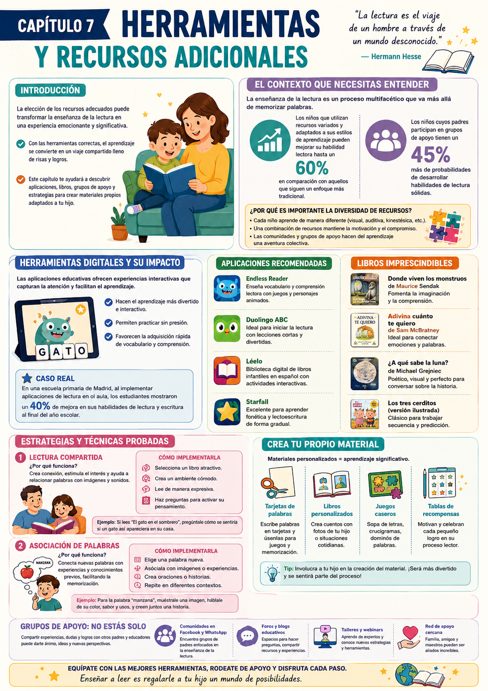

¿Cuáles son las mejores herramientas para enseñar a leer? ¿Cómo sé si lo que estoy usando es efectivo? La elección de los recursos adecuados puede ser la diferencia entre una experiencia frustrante y una emocionante.
No se trata de tener todo — se trata de tener lo correcto. Una combinación de apps, libros y actividades caseras bien elegidas puede transformar completamente la experiencia lectora de tu hijo.
Apps educativas
Las herramientas digitales ofrecen experiencias interactivas que capturan la atención de formas que el método tradicional no puede.
Libros y material físico
Los libros bien elegidos son la base. El material físico — tarjetas, murales, juegos — refuerza lo que las apps y los libros enseñan.
Comunidad y apoyo
Compartir experiencias con otras mamás que están en el mismo camino hace el proceso menos solitario y más efectivo.
Lo que dice la investigación
Los chicos que usan recursos variados y adaptados a su estilo de aprendizaje mejoran su habilidad lectora hasta un 60% más que los que siguen un único enfoque tradicional. La diversidad de recursos no es un lujo — es una estrategia.
✅ Antes de arrancar este capítulo

Tuki te dice:
Equiparte con las mejores herramientas, rodearte de apoyo y disfrutar cada paso — ese es el secreto para que enseñar a leer sea una aventura y no una carga.
Antes de ver qué herramientas usar, entendamos por qué la diversidad de recursos hace tanta diferencia — y qué rol juegan las apps, los libros y la comunidad en el proceso lector.
Herramientas digitales y su impacto
Apps que enganchan · Sin reemplazar el libro
Las apps educativas ofrecen experiencias interactivas que capturan la atención de formas que los métodos tradicionales no pueden. Un chico que lucha con la lectura en papel puede iluminarse con una app que cuenta la misma historia con animaciones y sonidos.
En una escuela primaria de Madrid donde se implementaron apps de lectura en el aula, los estudiantes mostraron un 40% de mejora en lectura y escritura al final del año. Las herramientas digitales complementan — no reemplazan — el libro.
Starfall
Juegos y canciones para introducir letras. Permite monitorear el progreso y leer libros en voz alta.
Endless Alphabet
Personajes animados y festín visual para aprender vocabulario jugando. Muy efectiva para chicos visuales.
ABCmouse
Currículo completo de preescolar. Se adapta al nivel y permite avanzar a su propio ritmo.
Reading Eggs
Combina juegos, canciones y libros interactivos. Se adapta al nivel lector del chico automáticamente.
La clave del equilibrio
Usá las apps como aliadas, no como niñeras digitales. Lo ideal: 20-30 minutos de app + tiempo de libro físico. Involucrate mientras usa la app — eso multiplica el aprendizaje.
Libros imprescindibles
Clásicos que funcionan · Por qué eligen bien
Los libros bien elegidos son la base de todo. No se trata de cantidad — se trata de libros que conecten con el chico, que tengan imágenes que inviten, tramas que enganchen y palabras que no abrumen.
- 📖Donde viven los monstruos (Maurice Sendak) — Fomenta imaginación y comprensión emocional.
- 📖Adivina cuánto te quiero (Sam McBratney) — Ideal para conectar emociones con palabras.
- 📖¿A qué sabe la luna? (Michael Grejniec) — Poético y perfecto para conversar sobre la historia.
- 📖Los tres cerditos (versión ilustrada) — Clásico para trabajar secuencia y predicción.
Tip para elegir
Visitá la biblioteca con tu hijo y dejalo que elija. Un libro que él eligió tiene 10 veces más chances de ser leído que uno que vos le impusiste.
Grupos de apoyo y comunidad
No estás sola en esto
Compartir experiencias con otras mamás que están en el mismo camino hace el proceso menos solitario. Los chicos cuyos padres participan en grupos de apoyo tienen un 45% más de probabilidades de desarrollar habilidades lectoras sólidas.
- 1Comunidades en redes: grupos de Facebook o WhatsApp de mamás enfocadas en la educación en casa — excelentes para compartir recursos y preguntas.
- 2Foros y blogs educativos: espacios para hacer preguntas, compartir recursos y experiencias con otras familias.
- 3Red de apoyo cercana: familia, amigos y maestros pueden ser aliados increíbles — no tenés que hacerlo sola.
Tuki te dice:
Cada chico aprende diferente. El mejor recurso es el que conecta con él — probá varios y observá cuál lo engancha más.
Tres técnicas concretas para usar las herramientas de forma efectiva — lectura compartida, asociación de palabras y juego de roles con cuentos.
Lectura compartida expresiva
Conectar palabras con imágenes y sonidos
La lectura compartida transforma la forma en que el chico percibe los libros. Al compartir la experiencia, lo ayudás a conectar palabras con imágenes y sonidos — y creás un espacio seguro para explorar y hacer preguntas.
- 1Elegí un libro visualmente estimulante — con rimas o repetición si es más chico.
- 2Encontrá un lugar cómodo, sin distracciones.
- 3Leé con expresión — distintos tonos para cada personaje, pausas dramáticas, suspenso.
- 4Hacé preguntas después de cada página: "¿qué creés que va a pasar?" o "¿qué te parece este personaje?"
Ejemplo concreto
Si leen "El gato en el sombrero", preguntale cómo se sentiría si ese gato apareciera en su casa. Eso conecta la historia con su vida real — y eso es lo que fija el aprendizaje.
Asociación de palabras
Mapas mentales de vocabulario nuevo
Relacionar palabras nuevas con imágenes o conceptos que el chico ya conoce facilita la retención. Es la forma más natural de ampliar el vocabulario — igual que lo hacemos los adultos.
- 1Elegí una palabra nueva relevante para su vida: "perro", "jugar", "aventura".
- 2Escribí la palabra en el centro de una hoja y rodeenla de todo lo que se le ocurra: "ladrar", "jugar", "pasear", "amigo".
- 3Agregá dibujos o fotos para cada concepto — el mapa visual es muy poderoso para chicos visuales.
- 4Usá las palabras del mapa para crear frases: "Mi perro ladra cuando jugamos en el parque."
Ejemplo concreto
Con la palabra "perro" como centro, pueden inventar una historia corta sobre un día en el parque con su perro imaginario — practican lectura, escritura y vocabulario al mismo tiempo.
Juego de roles con cuentos
Teatro en casa · Comprensión y vocabulario
Cuando el chico se pone en el papel de un personaje, refuerza su comprensión de la narrativa y el vocabulario de forma lúdica y memorable. Es difícil olvidar una historia que viviste desde adentro.
- 1Elegí un cuento con personajes claros — "Caperucita Roja", "Los tres cerditos", cualquier clásico.
- 2Asignen roles — que él elija quién quiere ser. Vos tomás el otro personaje.
- 3Mientras leen, actúen lo que sucede — diferentes voces, expresiones, movimientos.
- 4Al terminar: "¿cómo te sentiste siendo ese personaje? ¿qué hubieras hecho diferente?"
Ejemplo concreto
Si él es Caperucita y vos el lobo, actuar la historia les ayuda a recordar palabras, secuencia de eventos — y crea un recuerdo divertido asociado a la lectura.
Tuki te dice:
Experimentá, divertite y observá cómo florece. Cada chico es diferente — lo que importa es encontrar la combinación que a él lo engancha.
Dos ejercicios para aplicar esta semana más las dos recetas del capítulo. Todo con materiales que ya tenés en casa.
🔍 Caza de Palabras con Mapa
¿Para qué sirve? Practicar la lectura de forma activa y divertida — ideal para chicos kinestésicos que necesitan moverse.
- 1Escribí palabras en hojas de papel — mezcla conocidas y nuevas.
- 2Escondé las hojas en distintos lugares de la casa y hacé un pequeño "mapa del tesoro".
- 3Temporizador: cuántas palabras puede encontrar en el tiempo dado.
- 4Al terminar, leen cada palabra encontrada y practican la pronunciación de las nuevas.
Resultado: Practica lectura en contexto divertido y refuerza vocabulario con asociación espacial.
✍️ Crea tu Propio Cuento
¿Para qué sirve? Desarrollar comprensión lectora y habilidades de escritura al crear una historia propia.
- 1Empezá con su tema favorito: un animal, un superhéroe, su juguete preferido.
- 2Hagan juntos el esquema: personajes, inicio, nudo, desenlace.
- 3Él escribe las frases o palabras clave de cada parte — ayudalo solo si lo pide.
- 4Lean el cuento juntos en voz alta con distintas voces para cada personaje.
Resultado: Comprensión lectora + escritura + imaginación + amor por los libros — todo en una actividad.
🃏 Caza de Palabras (versión clásica)
¿Para qué sirve? Reconocimiento de palabras en entorno divertido y activo.
- 1Escribí palabras en tarjetas de cartón — podés reutilizar cajas de cereal.
- 2Escondé las tarjetas con pistas o indicaciones.
- 3Cada tarjeta encontrada se lee en voz alta.
- 4Al terminar, usán todas las palabras para crear oraciones juntos.
Resultado: Reconoce las palabras más fácilmente y gana confianza al leer.
🎱 Bingo de Letras y Palabras
¿Para qué sirve? Reforzar el reconocimiento de letras y palabras con competencia amistosa.
- 1Creá cartillas de bingo 5x5 con letras y palabras que está aprendiendo.
- 2Poné las mismas letras/palabras en papelitos en un bol.
- 3Sacá un papelito y leélo en voz alta — si lo tiene en la cartilla, lo marca.
- 4Gana quien complete primero una línea.
Resultado: Reconocimiento de letras y palabras en formato divertido y competitivo.
- 1No adaptar el material: recursos que no van con su nivel lo frustran. Elegí siempre materiales apropiados para su edad y habilidades.
- 2Forzar la lectura: si no está interesado, cambiá de actividad o método. La motivación es la clave — sin ella, ningún recurso funciona.
- 3Descuidar la diversión: si aprender a leer se siente como tarea, el chico lo va a evitar. Cada recurso tiene que tener un elemento lúdico.
- 4Ignorar el contexto emocional: si tu hijo asocia la lectura con estrés o ansiedad, ninguna app va a funcionar. Primero el ambiente positivo, después las herramientas.
- 5No celebrar los logros: cada avance cuenta. Ignorar los éxitos afecta la autoestima — celebrá todo, por pequeño que sea.
Tuki te dice:
¡Terminaste el Cap 7! En el Cap 8 vemos cómo trabajar en equipo con la escuela para que lo que hacés en casa y lo que aprende allá se complementen perfectamente.
Esta infografía resume las herramientas, apps y estrategias del capítulo. Guardala como referencia rápida cuando necesités ideas nuevas.

Infografía · Capítulo 7 — Herramientas y Recursos Adicionales
Tuki te dice:
¡Muy bien! Ya tenés el kit completo de herramientas. En el Cap 8 vemos cómo colaborar con la escuela para multiplicar lo que hacés en casa.